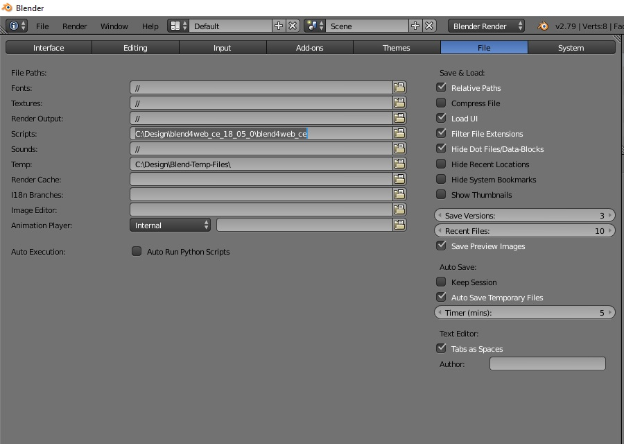
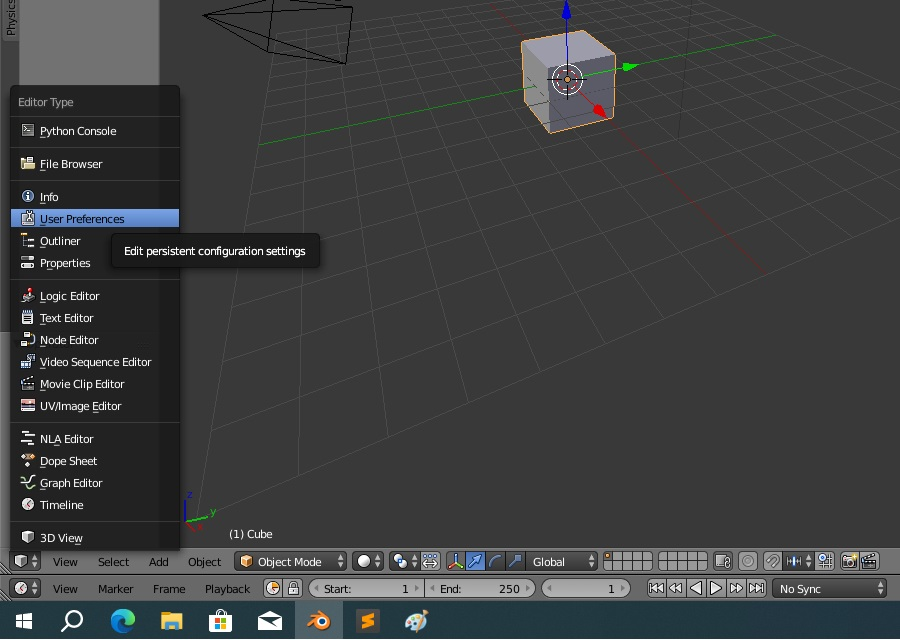
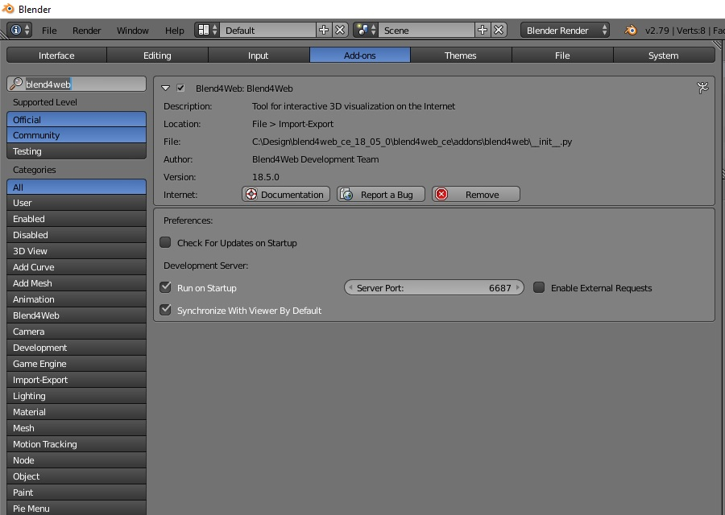
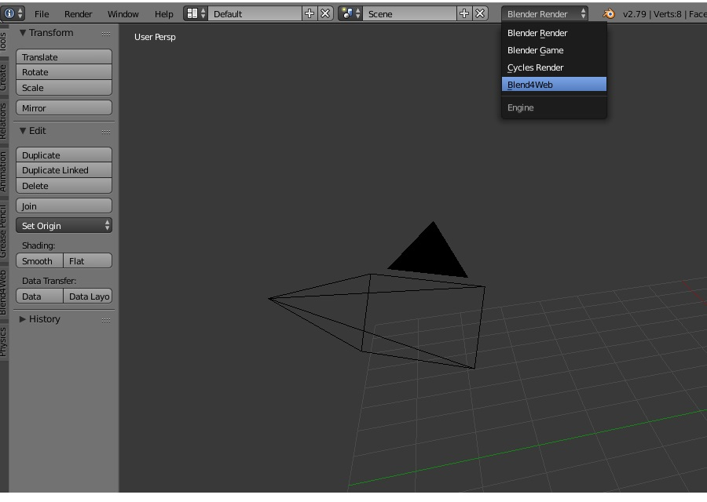
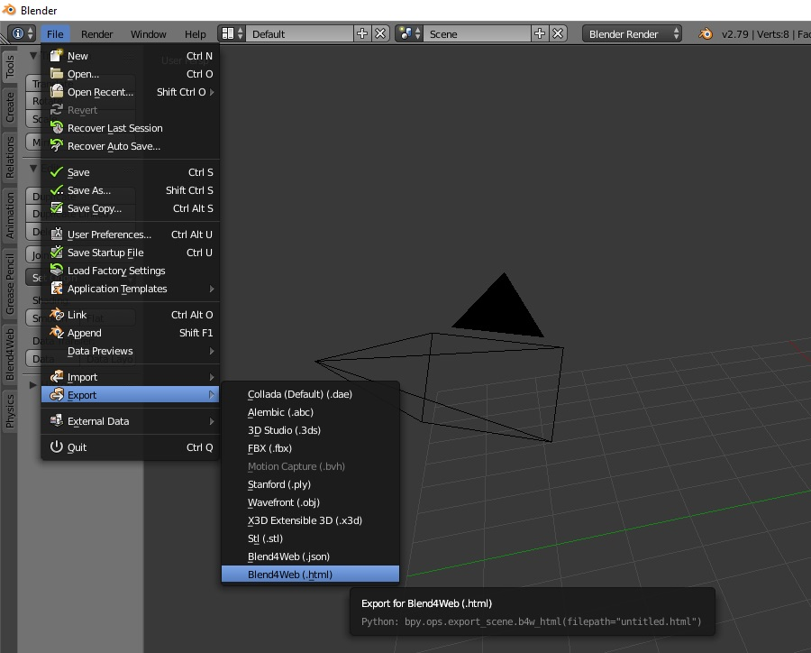

Para iniciar o Blend4Web você precisa usar o Blender 2.79 e instalar o SDK por meio do Add-on ou por meio da Versão Completa do Software

Após configurar o Blend4Web no Campo Scripts ("descompactar e copiar o local do diretório") você poderá instalar o Add-on na aba respectiva de instalação das extensões do Blender 2.79: Expanda sua tela para você ver a Seção de Preferências de Usuário

Ative a Aba de Add-ons no campo de busca à esquerda busque por Blend4Web que se você adicionou o local correto no Campo Scripts da Seção File, provavelmente você terá o campo do Add-on Blend4Web nesta tela para adicionar e lançar junto com o Blender, marque a caixa à esquerda do campo Blend4Web: Blend4web que você já poderá usar a ferramenta de WebGL.

Após instalado clique no Botão Save User Preferences localizado no canto inferior esquerdo e reinicie o Blender. Que ao lançar o Blender novamente você terá uma nova interface para edição de seus projetos Blend4Web. Para isso clique na Engine Blend4Web que você terá a interface das principais funcionalidades da ferramenta de desenvolvimento já disponível no Blender 3D.

Para começar a programar no Blend4Web você pode editar seu projeto naturalmente e simplesmente exportar para .html ou .json, e para que seu projeto esteja completo você irá criar um projeto na interface do Blend4Web SDK e com o nome que você desejar (recomendo tudo em minúsculo, sem acentos e sem espaços vazios) crie seu projeto, salve no blender no diretório do projeto e com a ferramenta do menu File -> Export escolha se deseja salvar em .html ou .json. Que seu projeto estará integrado com a API do Blend4Web pronto para ser carregado no navegador, diretamente pelo arquivo html e browser ou pelo arquivo .json e usar o webplayer do Blend4Web para lançar seu arquivo 3D com o formato do projeto .json.

Pronto, isto é tudo por enquanto, nas próximas sessões deste treinamento você poderá absorver mais conteúdo prático desta ferramenta de desenvolvimento, em detalhes e aprofundamento que o Ziga tem para mostrar, sobre conteúdo técnico que o Ziga alcançou desde quando o Blender oficial era este o Blender 2.79. É claro que o Blender está com versões e interface bem mais moderna, mas este curso se passa neste Blender e até aonde o Barquinho do Ziga poder ir: "Ao Infinito e Além!": explorando este Blender clássico até o Blender mais novo que tiver atualmente, se é que você me entende.
Esta página é um Fragmento do Curso: Blender for Web Treinamento Essencial: Um Curso de Programação Web - De Páginas estáticas à Games 3D
Como já dizia o Brinquedo falante 3D do Cinema: ❝Ao Infinito e Além!❞.